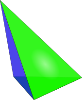
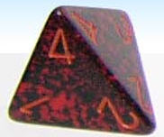
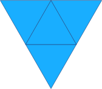
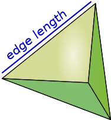
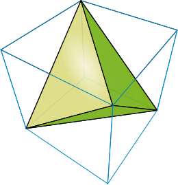

Tetrahedron
Go to Surface Area or Volume
Notice these interesting things:
- It has 4 Faces
- Each face is an Equilateral Triangle
- It has 6 Edges
- It has 4 Vertices (corner points)
- and at each vertex 3 edges meet
- It is one of the Platonic Solids

The tetrahedron also has a beautiful and unique property ...
all four vertices are the same distance from each other!
(thanks Ganesh)
And it is the only Platonic Solid with no parallel faces.

When we say "tetrahedron" we often mean "regular tetrahedron" (in other words all faces are the same size and shape)
But it could be an irregular tetrahedron, like this one:

4-Sided Dice? Yes! A tetrahedron that has 4 equal faces has an equal chance of landing on any face.
In fact, you can make fair dice out of all of the Platonic Solids.
| Make your own Tetrahedron , cut out the shape and glue it together. |
 |
Surface Area and Volume
For a regular tetrahedron:

Surface Area = √3 × (Edge Length)2
Volume = √212 × (Edge Length)3
Inside a Cube

Here we see a regular tetrahedron's corners matching neatly with half of the cube's corners.
Can you work out the volume of the cube compared to that tetrahedron?